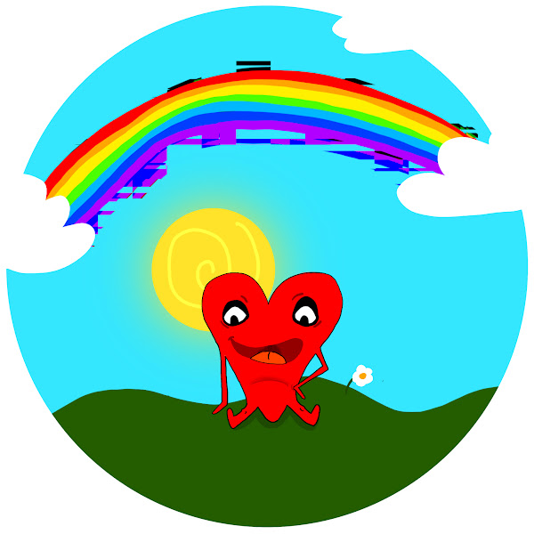

Hi, my name is Maria-Nikolette Muraru. I am a student at Toronto Metropolitan University, currently pursuing a BFA degree in the New Media Program. I have a passion for exploring the world of digital media, where creativity and technology intersect. My interests include storytelling, design, and innovation, and I am always eager to learn and grow in this dynamic field.
In my free time, I enjoy engaging in various creative projects, including writing fiction, composing music, sculpting, painting, and creating films. I believe that art is a powerful medium for self-expression and communication, and I strive to convey meaningful messages through my work.
Thank you for visiting my website! I hope you enjoy exploring my creations and learning more about me.